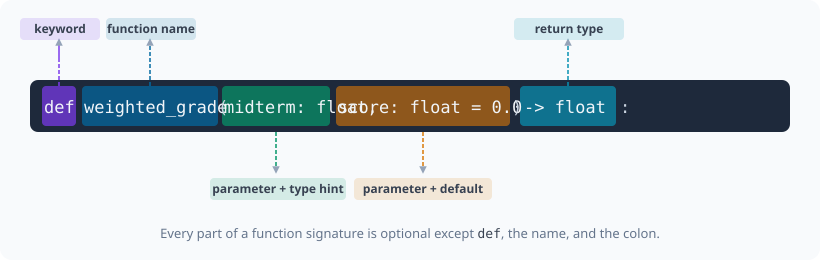

def greet(name: str) -> str:
return f"Hello, {name}!"
print(greet("Alice"))
print(greet("Dr. Mwangi"))Hello, Alice!
Hello, Dr. Mwangi!
Chapter 2 gave you the tools to make decisions and repeat actions. But every block of code you wrote ran once, in one place. The moment the same calculation appears in two places, copying it is the wrong answer: when the logic changes, you fix one copy and forget the other.
A function solves this. You write the logic once, give it a name, and call it from anywhere. The energy theft detector you are building in Part 4 will need dozens of these named calculations: parse a meter reading, flag a threshold breach, compute a rolling mean. This chapter is where you learn to write them.
By the end of this chapter you will write functions that accept any number of arguments, use standard library modules, and return structured results. Chapter 4 (04-classes.ipynb) takes this further: it shows how to bundle functions and the data they operate on into a single named object, called a class.
You need to compute a weighted grade. You could write the arithmetic inline every time you need it, but the day the weighting changes you have to find and update every copy.
A function wraps that arithmetic under a name. Write it once; call it anywhere.

def name(param: type, param2: type = default) -> return_type:def declares the function
snake_case
= default makes a parameter optional; callers may omit it
-> return_type states what the function produces; omit for None
return sends a value back to the caller
Start with the simplest possible function: one input, one output, nothing else:
def greet(name: str) -> str:
return f"Hello, {name}!"
print(greet("Alice"))
print(greet("Dr. Mwangi"))Hello, Alice!
Hello, Dr. Mwangi!Add a second parameter. A caller who provides both gets the explicit greeting; a caller who provides only the name gets a sensible default:
def greet(name: str, greeting: str = "Hello") -> str:
return f"{greeting}, {name}!"
print(greet("Alice"))
print(greet("Dr. Mwangi", greeting="Good morning"))Hello, Alice!
Good morning, Dr. Mwangi!A docstring is a string literal placed as the first statement of a function. It explains what the function does, what its inputs mean, and what it returns. IDEs, the built-in help(), and documentation generators all read it automatically.
def fn(x: float, y: float) -> float:
"""One-sentence summary.
Args:
x: What x means.
y: What y means.
Returns:
What the function produces.
"""
...
Now build a real function using all four elements: multiple typed parameters, a default value, a docstring, and a return type.
This function calculates a weighted grade. The weights default to a 30/50/20 split but any caller can override them:
def weighted_grade(
midterm: float,
final: float,
project: float,
weights: tuple[float, float, float] = (0.30, 0.50, 0.20),
) -> float:
"""Return the weighted average of three assessment scores.
Args:
midterm: Midterm exam score (0-100).
final: Final exam score (0-100).
project: Project score (0-100).
weights: Three weights summing to 1.0.
Returns:
Weighted average rounded to two decimal places, or 0.0 for invalid weights.
"""
if abs(sum(weights) - 1.0) > 0.001:
return 0.0
return round(midterm * weights[0] + final * weights[1] + project * weights[2], 2)Call with default weights, then override them. Keyword arguments make each call self-documenting:
grade_default = weighted_grade(midterm=82.0, final=91.0, project=88.0)
grade_custom = weighted_grade(
midterm=82.0,
final=91.0,
project=88.0,
weights=(0.25, 0.50, 0.25),
)
print(f"Default weights : {grade_default}")
print(f"Custom weights : {grade_custom}")Default weights : 87.7
Custom weights : 88.0A function can return more than one value by packing them into a tuple. The caller unpacks them in one line:
def score_summary(scores: list[float]) -> tuple[float, float, float, float]:
"""Return (mean, min, max, std) for a list of scores.
Args:
scores: List of numeric scores.
Returns:
Tuple of (mean, minimum, maximum, standard deviation).
Returns four zeros for an empty list.
"""
if not scores:
return (0.0, 0.0, 0.0, 0.0)
n = len(scores)
mean = sum(scores) / n
lo = min(scores)
hi = max(scores)
std = (sum((x - mean) ** 2 for x in scores) / n) ** 0.5
return (mean, lo, hi, std)Unpack the four return values into named variables in one assignment:
exam_scores: list[float] = [78.0, 85.5, 92.0, 88.5, 95.0, 67.0, 81.0]
mean, lo, hi, std = score_summary(exam_scores)
print(f"Mean : {mean:.1f}")
print(f"Range : {lo:.1f} to {hi:.1f}")
print(f"Std : {std:.2f}")Mean : 83.9
Range : 67.0 to 95.0
Std : 8.79Z-score normalisation scales each value to ‘how many standard deviations from the mean’. The result is 0.0 for an average score, positive above the mean, negative below.
def normalize(value: float, mean: float, std: float) -> float:
"""Return the z-score of value given distribution parameters.
Args:
value: The raw score to normalise.
mean: Distribution mean.
std: Distribution standard deviation.
Returns:
Z-score, or 0.0 if std is zero.
"""
if std == 0.0:
return 0.0
return (value - mean) / stdCompute the distribution parameters inline, then apply normalisation to every score:
exam_scores: list[float] = [72.0, 85.0, 91.0, 68.0, 88.0, 77.0, 94.0, 63.0]
n = len(exam_scores)
mu = sum(exam_scores) / n
sig = (sum((x - mu) ** 2 for x in exam_scores) / n) ** 0.5
normalised = [normalize(s, mu, sig) for s in exam_scores]
for raw, z in zip(exam_scores, normalised, strict=False):
bar = "#" * max(0, round((z + 3) * 5))
print(f" {raw:5.1f} z={z:+.2f} {bar}") 72.0 z=-0.73 ###########
85.0 z=+0.49 #################
91.0 z=+1.05 ####################
68.0 z=-1.10 #########
88.0 z=+0.77 ###################
77.0 z=-0.26 ##############
94.0 z=+1.34 ######################
63.0 z=-1.57 ####### Common Mistake: mutable default arguments
Never use a list, dict, or any other mutable object as a default parameter value. Python creates the default object once when the function is defined, not each time it is called. Every call that uses the default shares the same object.
Wrong: def add_score(score, history=[]):
Right: use None as the sentinel and create the list inside the function body when history is None.
This is the bug in action: two independent calls share the same default list:
def add_score_bad(score: float, history: list[float] = []) -> list[float]: # noqa: B006
history.append(score)
return history
# These look independent but share the same default list
first = add_score_bad(88.0)
second = add_score_bad(91.0)
print(f"first : {first}") # [88.0, 91.0], not [88.0]
print(f"second : {second}") # [88.0, 91.0], not [91.0]first : [88.0, 91.0]
second : [88.0, 91.0]Fix it by using None as the sentinel and creating a fresh list inside the function:
def add_score(score: float, history: list[float] | None = None) -> list[float]:
if history is None:
history = []
history.append(score)
return history
first = add_score(88.0)
second = add_score(91.0)
print(f"first : {first}") # [88.0]
print(f"second : {second}") # [91.0]first : [88.0]
second : [91.0] Activity: classify_cohort
Complete classify_cohort: it takes a list of scores and returns a Counter mapping each letter grade to the number of students who earned it.
Letter grades: A = 90+, B = 80-89, C = 70-79, D = 60-69, F = below 60.
from collections import Counter
def grade_letter(score: float) -> str:
"""Return the letter grade for a numeric score."""
return ... # TODO: implement
def classify_cohort(scores: list[float]) -> Counter[str]:
"""Return a Counter mapping letter grades to student counts."""
return ... # TODO: implement
cohort = [88.0, 73.5, 55.0, 91.0, 67.0, 82.0, 95.5, 78.0, 61.0, 84.0]
distribution = classify_cohort(cohort)
if distribution is not ...:
for grade in "ABCDF":
print(f"{grade}: {distribution.get(grade, 0)}") Activity: accept_login
Complete accept_login: it checks a username and password against a dict of approved users and returns True if both match, False otherwise.
def accept_login(users: dict[str, str], username: str, password: str) -> bool:
"""Return True if username exists and password matches.
Args:
users: Mapping of username to hashed password.
username: The submitted username.
password: The submitted password.
Returns:
True on success, False on any mismatch.
"""
return ... # TODO: implement
approved: dict[str, str] = {"alice": "s3cr3t", "bob": "pa$$w0rd"}
if accept_login(approved, "alice", "s3cr3t") is not ...:
print(accept_login(approved, "alice", "s3cr3t")) # True
print(accept_login(approved, "alice", "wrong")) # False
print(accept_login(approved, "carol", "s3cr3t")) # FalseA lambda is an anonymous function defined in a single expression. It takes inputs on the left of : and produces a result on the right.
Key Concept: when to use a lambda
Use a lambda when you need a throwaway function in one place: a sort key, a map() transform, or a filter() predicate. If the logic is more than one expression, or if you need it in more than one place, write a named function instead.
# Lambda syntax: lambda params: expression
square = lambda x: x**2 # noqa: E731
clamp = lambda x, lo, hi: max(lo, min(x, hi)) # noqa: E731
print(f"square(5) = {square(5)}")
print(f"clamp(115, 0, 100) = {clamp(115, 0, 100)}")square(5) = 25
clamp(115, 0, 100) = 100The most common use for lambdas is as a sort key: a function that extracts the comparison value from each element:
students: list[dict[str, object]] = [
{"name": "Alice", "gpa": 3.95, "major": "CS"},
{"name": "Bob", "gpa": 2.80, "major": "Math"},
{"name": "Carol", "gpa": 3.40, "major": "Physics"},
{"name": "Dan", "gpa": 3.70, "major": "CS"},
]
# Sort by GPA descending
by_gpa = sorted(students, key=lambda s: s["gpa"], reverse=True)
for s in by_gpa:
print(f"{s['name']:<8} GPA={s['gpa']}")Alice GPA=3.95
Dan GPA=3.7
Carol GPA=3.4
Bob GPA=2.8map(func, iterable) applies func to every element and returns a lazy iterator. Wrap with list() to materialise the result:
raw_scores: list[str] = ["78.5", "85.0", "92.3", "61.0", "88.7"]
# Convert strings to floats
scores: list[float] = list(map(float, raw_scores))
print(f"Parsed: {scores}")Parsed: [78.5, 85.0, 92.3, 61.0, 88.7]filter(func, iterable) keeps only elements where func returns True. Equivalent to a comprehension with an if clause, but more expressive with a named predicate:
# Keep only passing scores (>= 70)
passing: list[float] = list(filter(lambda s: s >= 70, scores))
print(f"Passing: {passing}")
# Same result as a comprehension
passing_comp = [s for s in scores if s >= 70]
print(f"Match: {passing == passing_comp}")Passing: [78.5, 85.0, 92.3, 88.7]
Match: True Activity: top students by GPA
Using filter and sorted, write a one-liner that returns the names of students with GPA >= 3.5, sorted by GPA descending.
students: list[dict[str, object]] = [
{"name": "Alice", "gpa": 3.95, "major": "CS"},
{"name": "Bob", "gpa": 2.80, "major": "Math"},
{"name": "Carol", "gpa": 3.40, "major": "Physics"},
{"name": "Dan", "gpa": 3.70, "major": "CS"},
]
# TODO: one expression using filter + sorted
top: list[str] = ...
if top is not ...:
print(top) # ['Alice', 'Dan']A fixed signature only works when you know the number of arguments in advance. Sometimes the caller decides how many score lists to aggregate, or which attributes to attach to a student profile.
Key Concept: *args and **kwargs
*args collects any number of positional arguments into a tuple.
**kwargs collects any number of keyword arguments into a dict.
Neither name is magic: *scores or **attrs work equally well. The * and ** are what matter.
*args lets callers pass one list, three lists, or unpack a list of lists without changing the function signature:
def aggregate_scores(*score_lists: list[float]) -> float:
"""Return the mean of all scores across any number of lists.
Args:
*score_lists: One or more lists of numeric scores.
Returns:
Overall mean, or 0.0 if no scores were provided.
"""
all_scores = [s for lst in score_lists for s in lst]
if not all_scores:
return 0.0
return round(sum(all_scores) / len(all_scores), 2)Call with one list, multiple lists, or unpack with *. The function handles all three cases the same way:
midterms: list[float] = [78.0, 85.0, 91.0]
finals: list[float] = [82.0, 88.0, 94.0]
projects: list[float] = [90.0, 87.0, 92.0]
print(aggregate_scores(midterms))
print(aggregate_scores(midterms, finals))
print(aggregate_scores(midterms, finals, projects))84.67
86.33
87.44**kwargs collects any number of keyword arguments into a dict. It is useful when you want to build a record from whatever attributes the caller provides:
def build_student_profile(student_id: str, **attributes: object) -> dict[str, object]:
"""Build a student profile dict from keyword attributes.
Args:
student_id: Unique student identifier.
**attributes: Any additional fields to attach.
Returns:
Dict with student_id plus all provided attributes.
"""
return {"student_id": student_id, **attributes}Pass any combination of keyword arguments. ** also unpacks a dict at the call site:
p1 = build_student_profile("S1042", name="Alice", gpa=3.95, major="CS")
p2 = build_student_profile("S1043", name="Bob", gpa=2.80)
extra = {"program": "exchange", "cohort": 2024}
p3 = build_student_profile("S1044", name="Carol", **extra)
for p in (p1, p2, p3):
print(p){'student_id': 'S1042', 'name': 'Alice', 'gpa': 3.95, 'major': 'CS'}
{'student_id': 'S1043', 'name': 'Bob', 'gpa': 2.8}
{'student_id': 'S1044', 'name': 'Carol', 'program': 'exchange', 'cohort': 2024}You can combine all four argument forms in one signature: fixed positional, *args, keyword-only (must be named at the call site), and **kwargs:
def log_cohort_stats(
semester: str,
*courses: str,
verbose: bool = False,
**metrics: float,
) -> dict[str, object]:
"""Log and return stats for a semester cohort.
Args:
semester: Semester label, e.g. "2024-S1".
*courses: Course codes included in this run.
verbose: If True, print each metric.
**metrics: Named statistics to record.
Returns:
Dict with semester, courses, and metrics.
"""
record: dict[str, object] = {
"semester": semester,
"courses": list(courses),
"metrics": metrics,
}
if verbose:
for key, val in metrics.items():
print(f" {key}: {val:.3f}")
return recordverbose is keyword-only: it cannot be passed positionally because *courses comes before it in the signature:
result = log_cohort_stats(
"2024-S1",
"CS101",
"MATH201",
verbose=True,
pass_rate=0.821,
mean_gpa=3.12,
median_score=74.5,
)
print(result) pass_rate: 0.821
mean_gpa: 3.120
median_score: 74.500
{'semester': '2024-S1', 'courses': ['CS101', 'MATH201'], 'metrics': {'pass_rate': 0.821, 'mean_gpa': 3.12, 'median_score': 74.5}} Activity: add a timestamp
Extend log_cohort_stats to also include a timestamp key in the returned dict. Use datetime.now(tz=UTC) from the datetime module and format it with .isoformat().
from datetime import UTC, datetime
def log_cohort_stats_v2(
semester: str,
*courses: str,
verbose: bool = False,
**metrics: float,
) -> dict[str, object]:
"""Extended version: adds a UTC timestamp to the returned record."""
return ... # TODO: reuse log_cohort_stats logic and add timestamp
result = log_cohort_stats_v2("2024-S1", "CS101", pass_rate=0.821)
if result is not ...:
print(result.get("timestamp", "missing"))A module is a Python file. When you write import math, Python loads math.py from the standard library and makes its contents available. No installation needed: these modules ship with every Python installation.
import math gives you math.sqrt(), math.pi, etc.
from math import sqrt, pi imports names directly; use this when you need just one or two items.
The math module provides precise arithmetic for single numeric values:
import math
print(f"pi = {math.pi:.6f}")
print(f"e = {math.e:.6f}")
print(f"sqrt(2) = {math.sqrt(2):.6f}")
print(f"log10(1000) = {math.log10(1000)}")
print(f"ceil(4.2) = {math.ceil(4.2)}")
print(f"floor(4.8) = {math.floor(4.8)}")
print(f"isnan(0.0) = {math.isnan(0.0)}")
print(f"isinf(1e400) = {math.isinf(1e400)}")pi = 3.141593
e = 2.718282
sqrt(2) = 1.414214
log10(1000) = 3.0
ceil(4.2) = 5
floor(4.8) = 4
isnan(0.0) = False
isinf(1e400) = Truejson converts Python dicts, lists, and primitives to JSON strings and back. It is the standard format for saving run configs and logging result metadata:
import json
run_result: dict[str, object] = {
"run_id": "2024-S1-001",
"course": "CS101",
"pass_rate": 0.821,
"mean_score": 74.5,
"flags": ["regrade", "audit"],
}
serialised = json.dumps(run_result, indent=2)
print(serialised){
"run_id": "2024-S1-001",
"course": "CS101",
"pass_rate": 0.821,
"mean_score": 74.5,
"flags": [
"regrade",
"audit"
]
}# JSON string back to Python dict
loaded: dict[str, object] = json.loads(serialised)
print(f"pass_rate : {loaded['pass_rate']}")
print(f"flags : {loaded['flags']}")pass_rate : 0.821
flags : ['regrade', 'audit']datetime represents a point in time. Always attach timezone.utc to avoid ambiguous naive datetime objects that can silently shift across time zones:
now = datetime.now(tz=UTC)
print(f"Timestamp : {now.isoformat()}")
print(f"Date part : {now.strftime('%Y-%m-%d')}")
print(f"Year : {now.year}")
print(f"Unix epoch : {now.timestamp():.0f}")Timestamp : 2026-07-02T12:59:48.683050+00:00
Date part : 2026-07-02
Year : 2026
Unix epoch : 1782997189These exercises use everything from sections 1-4. Each is self-contained.
Activity: student record processor
Write a function process_records(rows) that takes a list of raw row dicts (each has name, scores as a list of floats, and major) and returns a list of summary dicts with keys: name, major, mean, grade.
Use score_summary from Section 1 to get the mean, and grade_letter from Activity 1 to get the grade.
def process_records(
rows: list[dict[str, object]],
) -> list[dict[str, object]]:
"""Summarise a list of raw student rows.
Args:
rows: Each dict has "name", "scores", and "major".
Returns:
List of summary dicts with name, major, mean, grade.
"""
return ... # TODO: implement
students: list[dict[str, object]] = [
{"name": "Alice", "scores": [88.0, 92.0, 85.0], "major": "CS"},
{"name": "Bob", "scores": [62.0, 70.0, 58.0], "major": "Math"},
{"name": "Carol", "scores": [91.0, 94.0, 89.0], "major": "Physics"},
{"name": "Dan", "scores": [74.0, 68.0, 71.0], "major": "CS"},
]
result = process_records(students)
if result is not ...:
for r in result:
print(f"{r['name']:<8} {r['major']:<10} mean={r['mean']:.1f} {r['grade']}") Activity: moving window average
Complete moving_window_average: it replaces each value with the mean of the values within n_neighbors positions on each side. Edge values use whatever neighbors are available.
def moving_window_average(x: list[float], n_neighbors: int = 1) -> list[float]:
"""Replace each value with the mean of its n_neighbors on each side.
Args:
x: Input list of numeric values.
n_neighbors: Window half-width.
Returns:
Smoothed list of the same length as x.
"""
return ... # TODO: implement
readings: list[float] = [36.5, 36.7, 36.8, 36.6, 36.9, 39.5, 36.7, 36.8]
smoothed = moving_window_average(readings, n_neighbors=2)
if smoothed is not ...:
for raw, sm in zip(readings, smoothed, strict=False):
print(f"{raw:.1f} -> {sm:.2f}")| Resource | Why it matters |
|---|---|
| PEP 484: Type Hints | The original proposal; reading it explains why certain annotation rules exist |
| PEP 257: Docstring Conventions | The standard for what goes in a docstring |
| Google Python Style Guide: Functions | The docstring format used throughout this book |
| Real Python: Lambda Functions | Covers every edge case, including when NOT to use lambdas |
Python functools docs |
partial, lru_cache, reduce: the tools that build on what this chapter covers |
| Concept | Key rule |
|---|---|
| Functions | Annotate all params and return types; use Google-style docstrings |
| Defaults | Never use a mutable object as a default; use None and create inside |
| Multiple returns | Pack into a tuple; unpack with a, b = fn() |
| Lambda | One expression, one place; write a named function for anything more |
*args |
Collects positional arguments into a tuple |
**kwargs |
Collects keyword arguments into a dict |
| Standard library | math for precise arithmetic; json for serialisation; datetime for timestamps |
Next: Chapter 4: Classes and patterns: how to bundle functions and the data they operate on into a single named object.